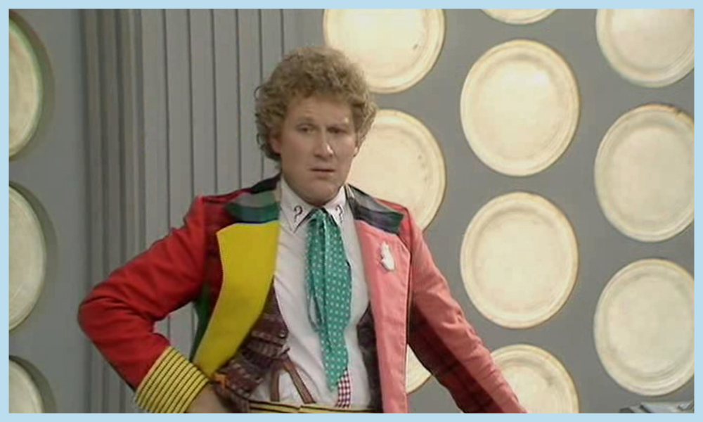

Doctor Who is both a television show and a global media franchise owned and operated by the British Broadcasting Company, BBC. It centers on a time traveling man known as The Doctor and his adventures in saving the world. The fast paced narrative allows for the Doctor's regeneration, which has lead to multiple actors taking over the lead role throughout it's long run as an entertainment staple world-wide. The Doctor is often accompanied by one of his many companions, with the revived show typically only having one companion per season, or even per doctor. The show's timeline can be confusing, with all the wibbly wobbly timey wimey stuff, but the show's captivating characters and narrative have brought in audiences for generations.
-
Doctor Who Premiere
23 November 1963
What was to become a world-wide science fiction phenomena premiered in November of 1963.
-
First Doctor
1963-1966
William Hartnell, the show's first doctor primarily battled Daleks alongside several companions.
-
Second Doctor
1966-1969
Patrick Troughton was the second Doctro battling both Cybermen and Daleks throught his time as Doctor.
-
Third Doctor
1970-1974
Jon Pertwee, as the third Doctor saw the introduction of the Master, an infamous Doctor Who villain who surfaces over and over again.
-
Fourth Doctor
1974-1981
Jon Baker, considered by many to be the most iconic doctor, fought all recurring villians and saw the introduction of K-9, the popular robotic dog as a companion.
-
Fifth Doctor
1981-1984
Peter Davison was the Doctor for seasons 19-21. He battled many familiar foe and had several companions.
-
Sixth Doctor
1984-1986
Colin Baker saw the second doctor a s a companion for one adventure in season 22, but primarily travelled with Peri.
 -
Seventh Doctor
1987-1989,1996
Sylvester McCoy was the seventh Doctor, traveling with Ace and fighting the likes of Daleks, Cybermen and the Master in his 3 season run.
-
Eighth Doctor
1996, 2013
Between incarnations of the television series, Paul McGann portrayed the Doctor in a television movie which involved a battle with the Master.
-
New Who Premiere
March 26,2005
Headed by Russel T Davies and Julie Gardner, Doctor Who was revived in 2005 once again as a BBC Series with a direct continuation of the original series plot.
-
Ninth Doctor
2005
Christoper Eccleston saw a short stint as the Doctor, working with only one companion, Rose Tyler.

-
Tenth Doctor
2005-2010
David Tennant's run as the Doctor saw several companions. He continued with Rose in the second season, but later brought in Martha Jones and Donna Noble.
-
Eleventh Doctor
2010-2013
Matt Smith had a widely popular run as The Doctor, bringing new found popularity of the show to the United States. He traveled primarily with Amy Pond and Rory Williams, along with their daughter River Song, whom he eventually marries.
-
Fiftieth Special
November 23, 2013
The Fiftieth Special for the show celebrating the fifty year history of the television show franchise, brought in John Hurt, Matt Smith and David Tennant. It focused on the Time War and how that has affected who the Doctor is presently.
-
War Doctor
2013
John Hurt played the War Doctor in the Fiftieth Special, focusing on the Time War which caused him to forsake the promise he made when choosing to be "The Doctor"
-
Twelfth Doctor
2013 to Present
Peter Capaldi has taken over as the show's latest Doctor paired with Clara Oswald, Madame Vastra, Straks, and Jenny.